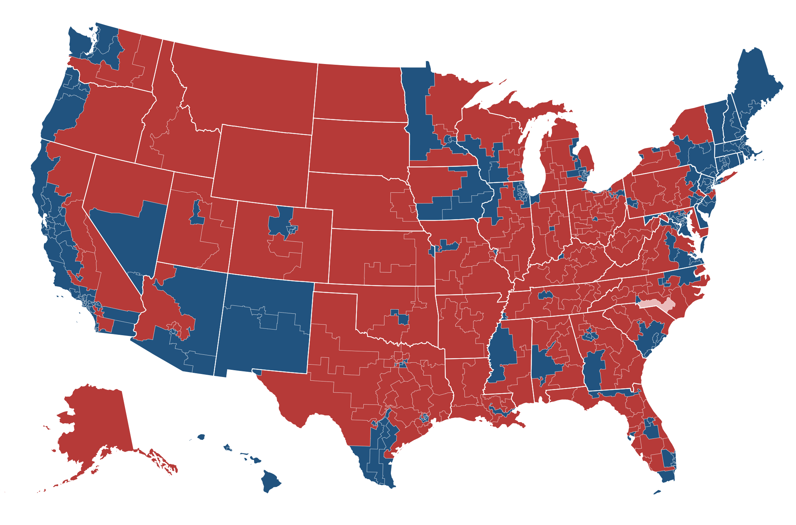
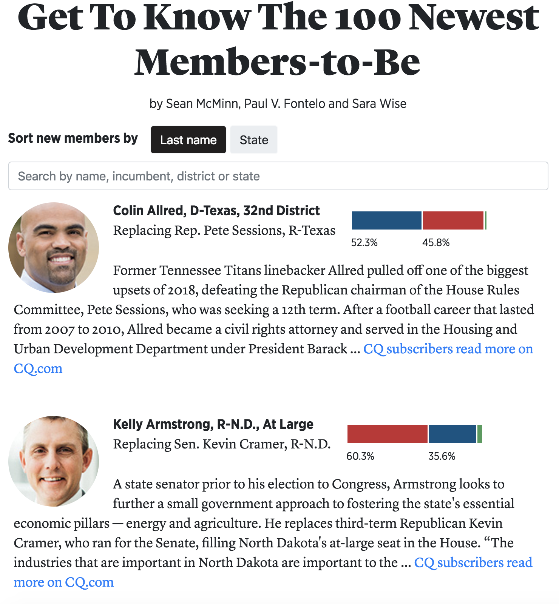

I'm a visual reporter at CQ and Roll Call. I make graphics with code, especially HTML, CSS,
Python, R and JavaScript. Sometimes I also use programs like Adobe
Illustrator and QGIS. Previously, I interned on the interactive graphics team at USA Today. I have an MA in
investigative journalism from American University and a BS in visual journalism from West Virginia University. More
importantly, I also have two awesome cats and a bunch of comic books.

This page served as the go-to for Roll Call's midterm election
coverage in 2018. Because of our audience, we knew we should focus chiefly on the house.

A caption for the above image.
This page served as the go-to for Roll Call's midterm election
coverage in 2018. Because of our audience, we knew we should focus chiefly on the house.A caption for the above image.